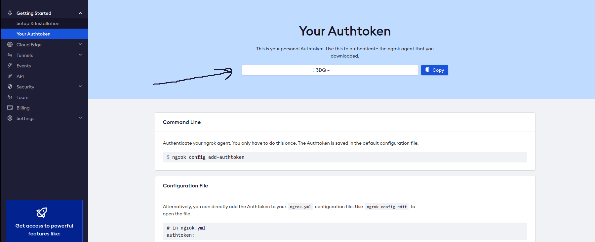
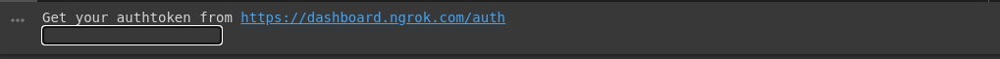
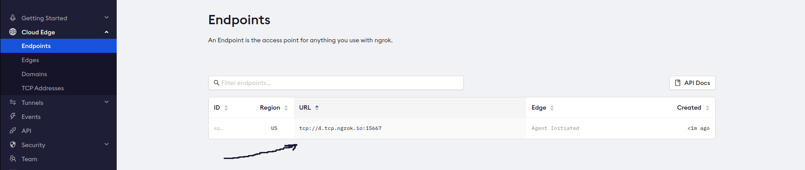

Transform Google Colab to a GPU instance with full SSH access

Table of Contents
Introduction
Google Colab is a great service that provides free GPUs (for up to 12hours of continuous usage). It allows users to interact with a sever through a Jupyter notebook environment.
While using Google Colab I encountered few limitations: working with a linear notebook can get messy, no good file editor and also I think Jupyter notebook is not suitable for a structured ML project/code.
In this post I will explain how to transform Google Colab instance into a real server with SSH access (with GPU Nvidia T4) and a directory synchronised with local machine (to edit files/add datasets easily).
Workflow
The cover summarises steps described hereunder.
Step 1: Start Google Colab and open a Ngrok account
Open the following notebook using your Google account. In addition to that, you will have to create an account on https://ngrok.com/ that will be used for port forwarding.
Step 2: Check GPU availability
Run the following code in your notebook to check the GPU availability and nvcc version.
You should be able to see information about the GPU and nvcc compiler.
Step 3: Mount Google Drive
Now we can link Google drive to Colab using the following script, you’ll be asked to enter an authorization code that could be obtained from the shown link.
On the other side, on your local host, you can easily download Google drive application and choose a folder to be synchronised between you laptop and google drive.
For linux users reference
sudo apt update && sudo apt install gnome-online-accounts
 To add your Google Drive account, search for “Settings” in the GNOME menu.
To add your Google Drive account, search for “Settings” in the GNOME menu.
 From the left panel, select “Online Accounts”. Select “Google” from the available options
From the left panel, select “Online Accounts”. Select “Google” from the available options
 A tiny browser window will pop up, prompting you to log in to your Google account.
A tiny browser window will pop up, prompting you to log in to your Google account.
 Once the login is successful, GNOME will prompt for the contents to sync with your Google Drive.
Once the login is successful, GNOME will prompt for the contents to sync with your Google Drive.
 Voila! Google Drive is ready to go! Fire up the file manager. You can directly access the Google Drive folder. Any change made in the folder will be synced with the online storage.
Voila! Google Drive is ready to go! Fire up the file manager. You can directly access the Google Drive folder. Any change made in the folder will be synced with the online storage.
 Let us call it
Let us call it ssh_files.
So up to now, ssh_files folder is available on Google drive, synchronised with your machine and mounted on Colab in the following path
This step can be omitted if we chose to work with Github and use it to keep track of modifications and synchronise.
Step 4: Setup SSH forwarding
Next step consists on using Ngrok to make ssh forwarding. We first generate a user name and a password on Google Colab and start sshd (refer to the Notebook for code details).
After that, we can easily download Ngrok
Get auth key from ngrok-auth and copy it.
Run the next cell and paste the previous auth-token in the Google colab cell. This will create a TCP tunnel.
After this step, if you go to https://dashboard.ngrok.com/status you’ll be able to see something like this
Enjoy!
Now you can enjoy your server through ssh, connect to it simply using next cell (remember to replaced 0. and the colored port value according to your endpoint in ngrok)
Now run: export LD_PRELOAD=/usr/lib64-nvidia/libnvidia-ml.so

You can code locally in the directory synchronised with Google drive and execute it on the instance you’re connected to through ssh forwarding.
👻 Bonus 👻
You can even run a JupyterLab from the instance and forward it to a public URL. Run the following commands after you get connected to the instance via Ngrok.
In your browser go to https://myjupyter-lab.serveo.net and enjoy full functionalities of JupyterLab from a Google Colab instance.